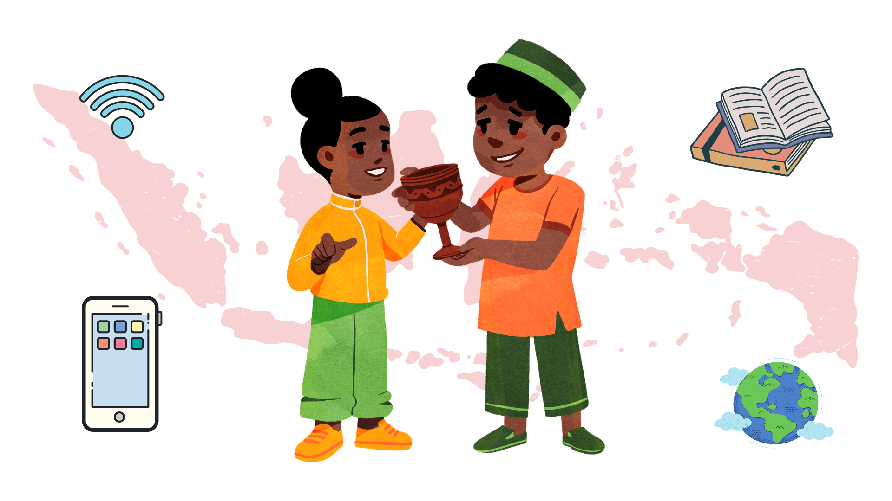

1950
Peran Anak Muda Dalam Era Pasca Pandemi
Dengan Milenial menjadikan Teknologi memungkinkan untuk melakukan apapun,
Indonesia bisa dan besar karena kreativitas dan gerak anak muda.

Milenial merupakan kata yang sering kita dengar dalam masa pandemic Covid 19. Milenial merupakan
kata baru yang terbit karena masa pandami Covid 19. Emang nya Milenial Apa si?
Menurut Wikipedia Milenial adalah adalah kelompok demografi setelah Generasi X (Gen-X). Tidak ada
batas waktu yang pasti untuk awal dan akhir dari kelompok ini. Para ahli dan peneliti biasanya
menggunakan awal 1980-an sebagai awal kelahiran kelompok ini hingga awal 2000-an sebagai akhir
kelahiran.
Milenial datang karena perkembangan teknologi informasi yang kian pesat dan cepat berkembang. Masa
pandemic menjadikan pemicu untuk melakukan akselerasi digital dalam semua aspek kehidupan seperti
pekerjaan, ekonomi, komunikasi, dan lain Sebagainya.
Milenial lahir karena zaman selalu bergerak dan milenial merupakan roda penggeraknya, Milenial
adalah salah satu bentuk bonus demografi yang akan datang pada 2030 hingga 2040 di Indonesia.
Milenial dikenal sebagai era generasi yang isi nya merupakan orang-orang yang lahir pada rentang
tahun tertentu. Datang nya generasi Milenial untuk mempercepat transformasi digital di Indonesia.
Milenial bukan hanya sekelompok anak muda yang paling terkoneksi luas dari generasi yang sebelumnya
tetapi milenial adalah motor penggerak pada masa pandemic. Milenial cenderung suka memanfaatkan
teknologi untuk mempermudah segala aktivitas. Contohnya dengan kemajuan teknologi, berbelanja bukan
lagi kegiatan jarak jauh. yang dulunya kita perlu ke pusat perbelanjaan untuk membeli barang yang
kita ingin kan, Sekarang kita bisa berbelanja melalui Aplikasi atau e – Commerce. Dengan begitu
aktivitas pertukaran uang masih tetap berjalan untuk menggerakan roda perekonomian bisa tergerak.
Dengan Milenial menjadikan Teknologi memungkinkan untuk melakukan apapun, Indonesia bisa dan besar
karena kreativitas dan gerak anak muda. Peran pemuda dalam arah sejarah perjalanan bangsa Indonesia,
kelompok muda nusantara telah tampil sebagai pelopor dalam memperjuangkan perubahan dan keluar dari
belenggu penjajahan Belanda. Seperti the grand argument yaitu kyai agus salim seorang politikus,
jurnalis, penulis, diplomat yang sangat luar biasa dan juga berlian serta pintar dan intelektual
dalam gagasannya.
Milenial menjadi agen perubahan dan agen pembangunan dengan kreativitasnya. Dalam perubahan milenial
dapat mewujudkan dengan ikut mendukung perubahan dalam lingkungan masyarakat, baik secara nasional
maupun daerah, menuju kepada arah yang lebih baik lagi pada masa yang akan datang. Serta sebagai
gerak pembangunan dan pengembang potensi produktifitas yang harus dikembangkan demi mencapai tujuan
pembangunan bangsa Indonesia.
Milenial merupakan peran penting dalam gerak kreativitas di era pasca pandemic. Dengan cara
menjadikan milenial sebagai subyek bukan hanya objek.
Milenial harus memiliki hobi baca agar percaya diri untuk berbicara terhadap suatu topik yang sedang
trend atau suatu hal yang harus di suarakan dan tidak menghabiskan waktu dengan bermain social media
(untuk Online) serta milenial harus memiliki kemampuan untuk terus menerus belajar hal baru menjadi
orang yang akan telaten belajar skill – skill baru dan juga kemampuan untuk bekerja sama mewujudkan
masa depan yang lebih cerah dan canggih.
Milenial harus berani bereksperimen untuk menciptakan atau berinovasi dengan hal baru berdasarkan
hobi ataupun aspek lainya, serta penelitian atau research dimana dengan hal tersebut memungkinkan
kita untuk mendapatkan sebuah inspirasi baru, dan metode penelitian paling sederhana adalah membaca
agar meningkatkan literasi baik digital maupun non digital kita bisa meningkatkan wawasan dan
menambah ide-ide yang bisa kita praktikkan dalam kehidupan salah satunya juga meningkatkan
kreativitas diri untuk ber – inovasi serta kontribusi dalam suatu kegiatan milenial dapat menambah
pengalaman dan menyalurkan ide-ide atau gagasan yang kita miliki di pasca masa pandemic.
Milenial menjadikan Indonesia menjadi negara maju dan besar atas keragaman nya.